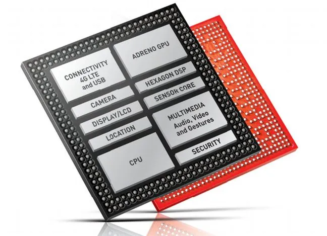
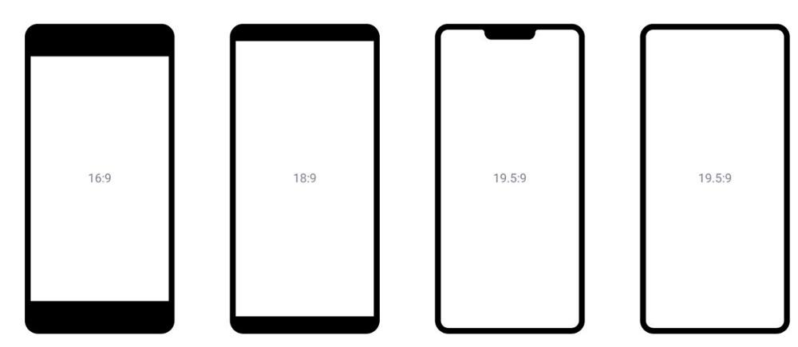
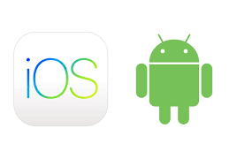
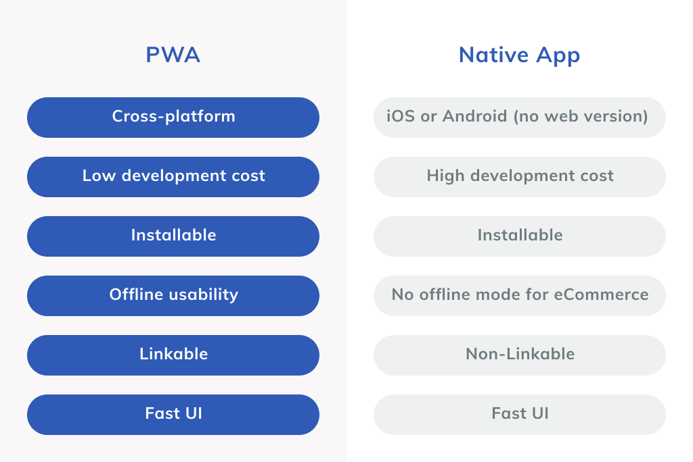
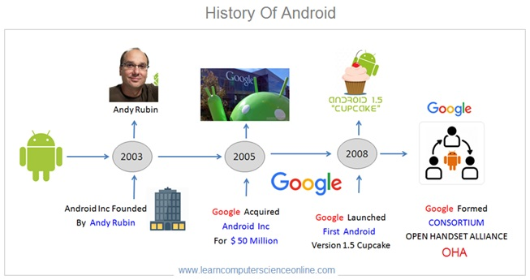
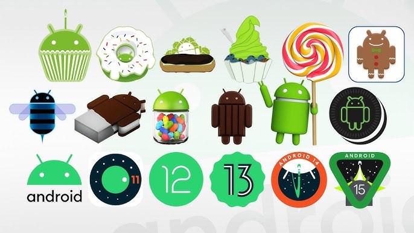
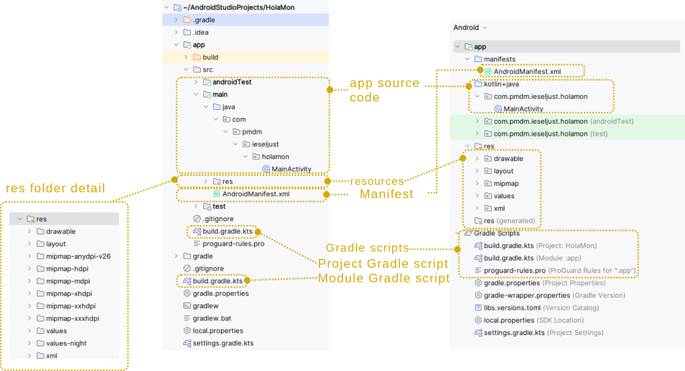

Unit 01. Introduction to Mobile Development
1. Mobile Devices
We live in a hyper-connected society where we are permanently online thanks to mobile devices. These devices have evolved from being simple communication tools to becoming authentic personal assistants that help us in our daily lives.
The evolution of mobile devices has been spectacular, from the first mobile phones that only allowed voice calls and SMS to the current smartphones, which are authentic pocket computers with which we can surf the internet, play multimedia content, play video games, take high-quality photos and videos, geolocate ourselves, etc.
This evolution has been possible thanks to the development of hardware (processors, memory, screens, batteries, sensors, etc.) and software (operating systems and applications).
IBM Simon
The first true smartphone was the IBM Simon, manufactured in 1992 and distributed in the United States between 1994 and 1995.
1.1 Types of Mobile Devices
There are different types of mobile devices, the most common being:
-
Mobile Phones / Smartphones: They are the most common and popular. They have a touch screen and an operating system (Android, iOS) that allows the installation of applications (apps) that expand their functionalities.
-
Tablets: They are devices with a screen size larger than that of a smartphone but smaller than that of a laptop. They are ideal for consuming multimedia content (videos, books, magazines, internet browsing) and are widely used in the educational field.
-
Wearables: They are devices that can be worn on the body. The most common are smartwatches and smartbands (or activity bands). They are usually companions to the smartphone and are used to monitor physical activity, receive notifications, control music playback, etc.
-
Cars (Smart/Connected Cars): Modern vehicles are now mobile computing platforms with internet access, operating systems, and app support, enabling connectivity with phones, other cars, and infrastructure.
-
ChromeOS Devices (Chromebooks): These are lightweight, portable laptops and tablets that primarily rely on web and cloud-based applications, with added support for Android and Linux software.
-
TVs (Smart TVs): Traditional televisions enhanced with integrated operating systems and internet connectivity, allowing users to stream content, browse the web, and interact with other smart devices.
-
XR (Extended Reality): An umbrella term for immersive technologies, including:
- VR (Virtual Reality): Fully digital, immersive experiences using headsets.
- AR (Augmented Reality): Digital overlays on the real world, viewed via smartphones or glasses.
- MR (Mixed Reality): Advanced AR where digital and physical objects interact in real time.
-
E-book readers: Devices designed specifically for reading digital books. They use electronic ink technology (e-ink), which mimics the appearance of paper and is much less tiring for the eyes than a conventional screen. Their autonomy is very high.
1.2 Characteristics of Mobile Devices
The main characteristics that define a mobile device are:
- Mobility: Its small size and weight, together with its wireless connectivity, allow it to be used anywhere.
- Wireless Connectivity: They can connect to the internet and other devices without cables, mainly through Wi-Fi and mobile data networks (3G, 4G, 5G). They also usually have other types of wireless connectivity such as Bluetooth, NFC, or GPS.
- Touch Screen: They are the main input and output element. Interaction is done through gestures (tap, double-tap, drag, pinch, etc.).
- Sensors: They incorporate numerous sensors that allow them to interact with the environment:
- Accelerometer: Measures acceleration and tilt.
- Gyroscope: Measures orientation and rotation.
- Magnetometer: Digital compass that detects magnetic north.
- GPS: Determines the geographic location.
- Light Sensor: Adjusts screen brightness automatically.
- Proximity Sensor: Detects if the device is close to an object (e.g., turns off the screen during a call).
- Fingerprint Sensor / Face Recognition: For device unlocking and authentication.
- Autonomy: They have a battery that allows them to operate for a certain time without being connected to the electrical grid. Autonomy is a key factor.
- Applications (Apps): Their functionality is extended by installing applications downloaded from official stores (Google Play, App Store) or other sources.
1.3 Hardware of a Mobile Device
The Processor and the SoC
A mobile device contains essentially the same hardware as a computer, but with a different architecture, as they are constrained by the device's smaller size. Therefore, when we talk about the processor in a mobile device, we must talk about the SoC or System on a Chip, an integrated circuit that combines different parts of the system, such as the CPU itself, the GPU (graphics processor), RAM, ROM, and USB or Wi-Fi controllers.
It is worth highlighting the importance of the British company ARM Holdings in the world of mobile processors. It is the creator of the architecture of the same name, ARM (Advanced RISC Machines), a 32- and 64-bit RISC (Reduced Instruction Set Computer) architecture that is present in the majority of mobile devices.

RAM Memory
The type of RAM memory found inside the SoC is dynamic (DRAM), which requires periodic refreshing and is very fast. To reduce energy consumption and minimize heating, this RAM is placed close to the CPU and GPU. This RAM is shared by both units.
Screens on Mobile Devices
One of the defining characteristics of smartphones is the screen, through which most of the interaction with the device takes place.
There are primarily two types of technologies, with different variations and generations:
-
LCD or Inorganic: Liquid Crystal Display, which lets light pass through based on its polarity, just like computer monitors. For this, they have a backlight panel located behind the display, which can be made of fluorescent lights or LEDs. Within this type, we find TFT, LED, IPS, PLS, or Apple's Retina displays.
-
OLED or Organic: These use organic materials that emit light by themselves when electricity is applied, meaning they do not need a backlight panel and can turn individual pixels on or off independently. These are thinner screens than LCDs, as they have fewer layers, with lower consumption, higher contrast, and greater brightness. Furthermore, this manufacturing technology allows panels to be flexible, leading to mobile phones with foldable or rollable screens. Within this family, we find AMOLED, Super AMOLED, or Dynamic AMOLED screens.

Apart from the screen manufacturing technology, it is important to know some other characteristics about them.
Resolution and Density
The screen resolution refers to the number of pixels displayed on it and is determined by the number of pixels in the horizontal and vertical directions.
From the resolution, we can determine the aspect ratio and the density of pixels per inch (ppi). This density is a measure that relates the size of the screen to its resolution. Two screens of different sizes with the same resolution will have different densities, and therefore, different image quality. Ideally, this density should be greater than 300 or 400 ppi.
Aspect Ratio
This is the relationship between the width and height of the screen. Traditionally, this ratio has followed the widescreen 16:9 format (for every 16 pixels in width, there are 9 in height). For example, the 1920x1080 format fulfills this proportion.
However, a few years ago, the 18:9 (and even 19:9) ratio began to become popular, aimed at larger panels with almost no bezels. This ratio allows a device to be less wide than another with the same diagonal in a 16:9 format, thereby improving its ergonomics.

Cameras
One of the components that is most often demanded in a mobile device is the photographic camera or cameras. These are mainly composed of:
- An optical block, which is relatively limited, although some devices allow for the connection of an external lens, and
- A sensor, composed of an array of photoreceptors, which translate light signals into electrical ones, thus obtaining the value for each point in the image.
Over time, mobile devices have incorporated more cameras, besides the front and rear ones, so that currently we can find three, four, or even five cameras (telephoto, wide-angle, monochromatic, or even infrared).
Sensors
Mobile devices can incorporate a wide variety of sensors, with which we can obtain very diverse information from our environment. Among the sensors we can find in a mobile device, the following stand out:
-
GPS (Global Positioning System): Provides location services by using a continuous signal to GPS satellites, allowing it to show where on the planet we are. This device opens up a whole range of possibilities such as LBS or Location-Based Services.
-
Accelerometer and Gyroscope: The gyroscope measures the device's movements thanks to angular acceleration, even allowing the detection of small rotations, making it very suitable for, for example, augmented reality applications. On the other hand, the accelerometer is less precise and allows detection of the device's position relative to the three axes: x, y, and z. With this, we can determine, for example, if the device is in a horizontal or vertical position, as well as detect turns, vibrations, tilt, or collisions.
-
Light Sensor: Allows the detection of ambient light, so the device can adjust the screen brightness to adapt to different lighting conditions.
-
Proximity Sensor: Allows the detection of the distance from the device to other objects through an infrared LED, and enables, for example, the screen to turn off when we bring it close to our face during a call.
In addition to these, we can find many others, such as biometric sensors (fingerprint or iris readers), magnetometer, barometer, capacitive sensors, infrared sensor, heart rate sensor, color spectrum sensor, or pedometer.

1.4 Operating Systems (OS)
The OS is the most important software that manages the device's hardware and allows applications to run. The most common are:
-
Android: Developed by Google. It is the most used OS in the world. It is an open-source system, which allows manufacturers to adapt it to their devices.
-
iOS: Developed by Apple. It is exclusively used on the company's devices (iPhone, iPad). It is a closed-source system, known for its security, performance, and integration with the Apple ecosystem.
- Others: HarmonyOS (Huawei), etc.

1.5 Applications (Apps)
Applications are programs designed to perform specific tasks on mobile devices. There are applications for almost everything: social networks, messaging, email, photography, music, video, maps, banking, news, games, etc.
They are mainly downloaded from official stores:
-
Google Play Store (for Android).
-
App Store (for iOS).
Mobile devices have countless uses, among which we can highlight:
- Communication: Calls, video calls, instant messaging (WhatsApp, Telegram), email, social networks (Instagram, TikTok, X - Twitter).
- Information: Internet browsing, reading news, consulting Wikipedia.
- Entertainment: Listening to music (Spotify), watching videos (YouTube, Netflix), playing games.
- Photography and Video: Taking photos, recording videos, editing them, and sharing them.
- Navigation and Maps: Geolocation, GPS navigation (Google Maps), searching for nearby places.
- E-commerce: Online shopping, banking applications, payment with the mobile phone (NFC).
- Productivity: Calendar, notes, document editing, task management.
- Health and Sports: Monitoring physical activity, counting steps, measuring heart rate.
1.6 Technologies for Mobile Application Development
Developing an application that runs natively on a specific operating system requires using its native technologies. However, to minimize the need for platform-specific development, several technologies exist that aim to enable cross-platform development in the broadest sense. These range from responsive web applications to compiled applications, including hybrid or progressive web applications (PWAs), each with its own advantages and disadvantages.
Let's look at each of them, categorized by their distance from or closeness to native code.
WebApps or Responsive Web Applications
These are applications based on web technologies: HTML, CSS, and JavaScript. They require only a web browser to run. Being "responsive" means their interface adapts to any device. For this type of application, no native code development is necessary, and they are entirely cross-platform because they run on the operating system's own web browser. Therefore, we have a single codebase that runs on all platforms. The main disadvantage is that they do not offer as good a user experience as native apps and do not allow access to all of the system's components.
Hybrid Applications
These use the trio of HTML, CSS, and JavaScript to build a website that is loaded within a WebView component—essentially a browser without the navigation bar or other options—giving it the appearance of a native application. This type of application can access some device features, like location or the accelerometer, through this component. Currently, the most popular framework for developing hybrid applications is Ionic, which allows development using other web frameworks like React, Angular, or Vue.
Progressive Web Applications (PWAs)
Closer to native applications are Progressive Web Applications (PWAs), which are revolutionizing the current landscape. These applications incrementally enhance their functionalities based on the mobile device they run on, to leverage more potential. They can access hardware, work offline or with poor connectivity, and offer system notifications. There are numerous frameworks for PWA development, including React PWA Library, Angular PWA Framework, Vue PWA Framework, Ionic PWA Framework, Svelte, PWA Builder, and Polymer.

Compiled Applications
These are technologies that aim to use a single programming language to generate mobile applications into the native code of each platform. Some of the most widely used technologies in this category are:
-
React Native and NativeScript: They use JavaScript as their base programming language. However, instead of building interfaces with HTML, they use the framework's own components, which are compiled to native code, making the use of a WebView as an intermediary unnecessary.
-
Flutter: Developed and maintained by Google, Flutter allows for cross-platform application development using the Dart language, which compiles to native code that runs entirely on the device. Flutter's way of working involves designing user interfaces using widgets, integrated directly into the code. Flutter comes with a set of predefined widgets, such as buttons, navigation bars, etc.
-
Kotlin Multiplatform and Compose Multiplatform: With Kotlin Multiplatform, we can share code between various platforms (Android, iOS, web, etc.) using Kotlin as the programming language. This means we can write an application's logic once and reuse it on different platforms, reducing development time and effort. With Compose Multiplatform, a technology based on Jetpack Compose, we can create shared user interfaces for Android, iOS, desktop, and web using Kotlin. This facilitates the creation of consistent and reusable user interfaces across various platforms.
The Most Popular Development SDKs
Programming for iOS
To program for iOS (iPhone, iPad, Apple Watch, etc.), you’ll need a mix of hardware, software, and knowledge. Here’s a clear breakdown:
Hardware
- Mac computer (MacBook, iMac, Mac Mini, etc.) iOS development officially requires macOS.
- iOS device (optional but recommended) You can test apps in the simulator, but real device testing is important.
Software
-
Xcode (free, from the Mac App Store)
-
Apple’s official IDE (Integrated Development Environment).
-
Includes editor, compiler, debugger, Interface Builder (UI designer), and the iOS Simulator.
-
iOS SDK (comes with Xcode)
-
Provides APIs, frameworks (UIKit, SwiftUI, Core Data, ARKit, etc.), and tools needed for building iOS apps.
-
Apple Developer Account (optional at first, required for publishing)
-
Free: lets you learn, run apps on simulator.
- Paid (\$99/year): required to publish to the App Store and to install apps on your physical iPhone.
Programming Languages
- Swift Apple’s modern language, recommended for all new projects.
- Objective-C older language, still used in legacy apps and some libraries.
1.7 Trends and Future
The future of mobile devices points towards:
- 5G Connectivity: Much higher speed and lower latency, enabling new applications.
- Folding screens and new formats.
- Augmented Reality (AR) and Virtual Reality (VR): More integrated into mobile devices.
- Artificial Intelligence (AI): Integrated into the device to improve photography, battery management, and personalize the user experience.
- More and better sensors.
- Greater integration with other devices (Internet of Things - IoT): Controlling the home, the car, etc., from the smartphone.
2. Introduction to Android development
As we saw previously, there are different technologies for mobile application development.
In the next units, we will focus on native applications for the Android operating system, maintained by Google and based on the Linux kernel.
2.1 Origins of Android
The origins of Android lie with the Palo Alto (California) company Android Inc., founded in 2003 by Andy Rubin. This company began by developing an operating system for digital cameras, but due to the sector's low profitability, they decided to pivot to mobile devices, a market then dominated by Symbian and Windows Mobile. In 2005, Google acquired Android Inc., and two years later, alongside the creation of the Open Handset Alliance—a consortium of various technology companies aimed at developing open standards for mobile devices—the first version of Android, Apple Pie, was announced. This version began to be incorporated into devices in 2008, and two years later, it captured nearly half of the market share.

2.2 The Android Operating System
Android is the most widely used operating system for mobile devices today. As we know, it is an operating system for touch-screen devices based on the Linux kernel and other open software standards.
Android is developed as open source software, meaning both its source code and its issue tracker are accessible. The Android Open Source Project (https://source.android.com/) contains the Android source code, released under the Apache license.
In June 2025, the latest version of Android, Android 16, was launched. Since its first version, it has continuously incorporated updates and new functionalities into the system. Furthermore, the ease it provides for application development has resulted in a large community of developers, whose work has produced over three million apps on the Google Play Store, the official Android application repository.
2.3 Characteristics
Some of the most relevant characteristics of Android are:
- Adaptable to a wide variety of screen sizes and resolutions, with support for 2D and 3D graphics libraries based on OpenGL.
- Natively supports multi-touch screens.
- Offers local storage through a lightweight database, SQLite.
- Supports a wide range of connectivity technologies.
- Includes a web browser based on the WebKit rendering engine and the V8 JavaScript engine from Google Chrome.
- Native applications are programmed with Java or Kotlin and are compiled for the ART (Android Runtime) virtual machine.
- Incorporates support for a wide variety of multimedia formats and streaming.
- Supports a vast array of hardware devices and sensors.
- Features a very extensive catalog of applications through the Google Play service.
2.4 Android Versions
Android has undergone a significant transformation since its first versions. As a summary, we will look at some characteristics of the most relevant updates.
The system began its journey in 2008 with versions 1.0 and 1.1, which included apps like Gmail, Maps, Calendar, and YouTube. It was in version 1.5, Cupcake, that a version name was introduced, and a large number of interface improvements were included, such as the on-screen keyboard, which allowed devices to eliminate physical keyboards. Subsequently, with version 1.6, Donut, the system began to adapt to different screen sizes and resolutions.
Versions 2.0 and 2.2 (Eclair and Froyo) introduced aspects like voice-guided navigation, real-time traffic information, and the bottom dock. Version 3.0, Honeycomb, was launched specifically for larger devices, like tablets, and in version 4.0, Ice Cream Sandwich, in 2011, this new interface, Holo, was unified for tablets and smartphones, thus entering the era of modern design.
But the biggest change was yet to come with versions 5.0 and 5.1, Lollipop, in 2014. Google reinvented Android in what is perhaps the most important update to the system, introducing the Material Design standard—a set of design specifications affecting the operating system, the web, and apps. With Material, flat color designs were introduced to give weight and depth to different interface elements using shadows, layers, or animations.
Subsequent versions included some interface improvements, such as split-screen mode in Android 7.0/7.1 (Nougat) and the picture-in-picture floating window in Android 8/8.1 (Oreo). With Android 10, the dessert-based version code names were abandoned, and some aspects of the interface were reinvented regarding gestures and the navigation system.
In Android 11, in 2020, substantial changes to privacy arrived, allowing users to grant apps temporary permissions to access location, camera, or microphone only when required, instead of permanently during installation.
And in 2021, Android 12 arrived, representing the biggest update since Android 5.0, with the introduction of Material You, which allows for system design personalization to automatically adjust to the user's settings. This means, for example, that the theme's color palette adapts to the user's chosen wallpaper. Additionally, under the hood, it offers a simpler and more granular way to control how apps access our data through the new privacy dashboard.
In August 2022, Android 13 (Tiramisu) appeared, evolving Material You and presenting improvements in security, audio, and integration with other Google products. Android 14 (Upside Down Cake), in October 2023, incorporated improvements in customization, privacy, and accessibility.
In September 2024, the launch of Android 15 is expected, bringed improvements to the user interface, security, and performance.
The last release is Android 16, in June 2025. Android 16's major updates include a new "Material 3 Expressive" UI with advanced animations and blur effects, a desktop mode for tablets, and an expanded Linux terminal to run full desktop applications. It also enhances privacy with features like Notification Cooldown and introduces improved media sharing via Bluetooth LE Audio.

2.5 Android Architecture
The Android architecture is composed of a stack of layers, based on the Linux kernel, and is adapted to a wide variety of devices. The different components of the system are shown in the following figure:

Original at: https://developer.android.com/guide/platform
We can see the following components:
-
System Applications: These form the base system and include the email client, calendar, SMS application, Maps, camera app, browser, contacts app, dialer, among others.
-
Application Framework (Java API Framework): Offers applications access to all Android functions, as well as the ability to publish and securely offer their functionalities to others. All this is designed to simplify the reuse of system components and modular services. Among these services we can find:
- An enriched view system for building the user interface,
- A resource manager, to access application resources such as translations, images, or layout files,
- A notification manager, to display alerts in the status bar,
- An activity manager, to manage the application lifecycle and handle navigation,
- Content providers, so that applications can access data provided by other applications.
-
C/C++ Libraries: These are libraries used by some system components, offered to developers through the Application Framework. Some of these libraries include the standard C library, 3D graphics libraries, multimedia libraries, or the SQLite database.
-
Android Runtime: Includes the ART virtual machine itself and the core Java libraries. Apps run their own processes as instances of the ART virtual machine, following the process virtualization paradigm (similar to the JVM for PC). The executables for this virtual machine are in DEX format, a bytecode specifically designed for Android and optimized to occupy minimal memory space.
-
Hardware Abstraction Layer (HAL): Consists of a series of library modules for the different hardware components of the device, such as the camera or sensors, and offers an interface to the upper layers to facilitate access to them.
-
Linux Kernel: This is the foundation of the Android platform, providing it with basic system functionalities such as process management, memory management, networking, drivers, and security.
2.6 Apps for Android
Android applications are natively programmed in Kotlin or Java and are compiled by the Android SDK, along with data and resource files (interfaces, images, etc.), to generate an .apk file. This file contains the application itself and the information Android needs for its installation.
Android implements the principle of least privilege in applications, which provides a certain level of security. This principle is based on:
- Android is a multi-user operating system, as it is based on Linux. The peculiarity is that for Android, each application is a different user.
- Each app has a user ID known only to the system, which establishes the necessary permissions for it to access its resources.
- Each process has its own virtual machine, so its code runs independently. In principle, each app will have its own process.
With this, each application only has access to the components it needs. However, an application can share data with other applications and access system services, either by having two applications share the same user ID or by requesting user permission to access device data and resources (camera, microphone, Bluetooth connection, SD card, contacts, etc.).
2.7 API Levels, Compatibility Libraries, and Jetpack
We have seen how different versions of Android introduce substantial changes in terms of operation and features. For developers, more than the version, we are interested in the API levels. These levels determine the compatibility of applications with Android versions. With each new version of the system, one or more API levels are introduced, which determine which device functionalities will be available to us.
Info
Android 16 is API level 36.
When we start developing an Android application, we must consider which API functionalities we will need and establish the minimum level that our application will require. For example, if we develop an application that we want to follow Material Design standards, we must use a minimum API level 21, which was introduced in Android 5.0. Or if we desire functionalities present in Android 11 or 12, we must use API levels 30 and 31, respectively.
To provide new functionalities or use equivalent functionalities in earlier versions of Android, Google launched a compatibility layer through Support Libraries. Currently, these libraries are integrated into Android Jetpack, a set of libraries that allows developers to focus on application logic and follow recommended practices, reducing boilerplate code and producing consistent code across different system versions.
Jetpack Compose
Traditionally, the design of native user interfaces has used XML files, which must be injected and manipulated from the source code.
With Jetpack Compose, a more modern toolkit for interface development is introduced, following a declarative model. This means we describe the state of the interface, and Compose takes care of the rest, simplifying the code and making it more maintainable and reusable.
3. Android Studio
Android Studio is the official IDE for Android development, based on JetBrains' IntelliJ IDE. Until 2014, Eclipse with the Android Development Tools (ADT) plugin was used.
The main characteristics of Android Studio are:
- It is a cross-platform IDE (Windows, Linux, macOS)
- It is distributed under the Apache 2.0 license (free),
- It uses Gradle for building packages,
- It includes a series of templates for common application layouts,
- It allows Android-specific code refactoring,
- It offers support for development on different devices: smartphones, tablets, televisions, or wearables,
- It incorporates the Device Manager component, which allows creating and managing virtual Android devices to run, debug applications, or analyze performance, as well as linking physical devices to our development environment,
- It includes support for Google Cloud Platform, enabling integration with various Google services.
3.1 Device Manager
The built-in Device Manager in Android Studio allows us to create and manage virtual Android devices, as well as link physical devices to our development environment.
We must keep in mind that the architecture and system for which we develop our applications are different from those of our development machine, not to mention that we can also create applications for a wide range of devices.
For testing and debugging applications, we can either directly connect a device to the machine and enable developer mode, or use virtualized devices. The advantage of virtualization is that we can test our applications with a wide range of devices and different configurations. The disadvantage is that we will have to create a virtual machine for each device we want to test, with the associated consumption of storage space and memory.
3.2 Android Studio installation
The best way of install Android Studio i to download the installer and follow the installation instructions. Once installed, Android Studio automatically checks for updates.
But before start the installation, read carefully the system requirements.
Installation guide (with system requirements)
Download and install Android Studio (Codelab)
Task
Install Android Studio
3.3 Genymotion emulator installation
Genymotion is a third-party Android emulator and virtual device management platform. It is a powerful alternative to the emulator that comes bundled with Android Studio (which is now based on the Android Emulator Hypervisor Driver for faster performance).
While Android Studio's Device Manager is the official tool for creating and running Android Virtual Devices (AVDs), Genymotion is often favored by developers for its significantly faster performance, advanced features, and ease of use for specific testing scenarios.
Additionally, Genymotion offers a cloud service that allows you to run emulators on remote servers. This is ideal for continuous integration/continuous deployment (CI/CD) pipelines, automated testing on a large scale, or accessing a powerful emulator from a less powerful local machine.
As a drawback, if you use the free license of Genymotion, you won't have access to the latest Android version and to the pro widgets.
Requirements and installation guides
Task
Install Genymotion Desktop and create and launch an Android Virtual Device with the latest API allowed.
3.4 Yout first Android app
Once you have Android Studio installed, it's time to create your first Android app. The purpose of this section is to practice the basic use of IDE and emulators.
Task
- Follow the guide at Create your first Android app codcelab
- Run the app on the Android Emulator. You can follow this codelab
- Close the Android emulator and start the Genymotion virtual device. Run your app on the Genymotion device.
- Connect your Android device and run the app on it. You can follow this codelab
3.5 Structure of an Android project
Android Studio uses Gradle as the project build tool. Android projects are organized into modules, where each module will be a different application. This allows us to have multiple versions of our application for different types of devices (tablets, wearables, etc.) under the same project.
Below, we see the structure generated in an Android project, from both the Project Files view in the side tool window and the Android view.

In the project files view, we can see the typical file structure of a Gradle project, with general application files in the root folder, as well as the specific folder for the application module (app). However, the Android view presents a more compact and simplified view of this information, organized into several main logical folders: app (which contains manifests, kotlin+java, and res), plus the Gradle Scripts folder.
Let's see some of the most important elements of this organization:
- The Gradle build scripts, in Kotlin DSL format (
build.gradle.kts). This includes both the general script located in the root (with information common to all modules) and the one specific to the application module (app/build.gradle.kts). In the Android view, both scripts are shown underGradle Scripts, indicating whether it's the script for the project or the module. - Inside the module folder (
app) we find thesrcfolder, which contains the application's source code (app/src/main). In the Android view, this is located in thekotlin+javafolder and is displayed in package name format instead of showing the directory structure. - The
app/src/main/resfolder, which will contain the application's resources (images, layouts, text strings, etc.). If we look at the detail, this folder contains many subfolders for the different types of resources. In the Android view, this content is displayed in a more compact and organized way, according to the resource type. - The application descriptor file:
app/AndroidManifest.xml, with information associated with it. As we will see, this is one of the most important files in our project, as it defines aspects such as the application name, package, icon, and its different components.
Gradle Scripts
General Build Script
As mentioned, an Android project defines a general configuration script build.gradle.kts for the project, located in the root folder, and another located in the app folder, which refers to the application module itself.
The content of the general build script will have the following structure:
1 2 3 4 5 | |
It contains aliases to the plugins it uses, defined in the version catalog file libs.versions.toml.
In previous versions, plugins were specified in this same file, but now this catalog is used to manage the versions of plugins and dependencies, to facilitate maintenance and version updates, since all are defined in the same place.
This file, located in the gradle folder, contains, among other things:
1 2 3 4 5 6 7 8 9 10 11 12 | |
This means it uses the plugins com.android.application (it's an Android application), kotlin-android (it's a Kotlin application) and kotlin-compose, with versions 8.13.0 for the first and 2.0.21 for the second.
The utility of these plugins is to correctly configure the project build process, ensuring that the Kotlin code is compiled properly and packaged correctly for Android.
Although by default plugins are loaded immediately, we can use the apply false syntax to load them later in the configuration files of each module.
Module Scripts
The build file most important is the build.gradle.kts of the application module itself. The main blocks that compose it are the following:
1 2 3 4 5 | |
This is where the plugins that the module will depend on are specified; specifically those defined in the general build file.
1 2 3 4 5 6 7 8 9 10 11 12 13 14 15 16 17 18 19 20 21 22 23 24 25 26 27 28 29 30 31 32 33 34 | |
This android block is where some of the most important aspects of the application are configured. It contains the namespace of our application (namespace) and the SDK version it was developed with (compileSdk).
Furthermore, it includes several sub-blocks, such as:
defaultConfig: Specifies the default configuration, with parameters such as the application ID (applicationId), the minimum SDK version the application will work with (minSdk), or the version it was developed for (targetSdk), among others.buildTypes: Where parameters for the different builds can be specified. When creating a module, two builds are created by default:releaseanddebug. Here we specify options like code optimization with Proguard, etc.compileOptions, where the Java version to be used to compile the project (sourceCompatibility) and the Java version the compilation will target (targetCompatibility) are specified. In this case, the valueJavaVersion.VERSION_1_8refers to Java version 8.kotlinOptionsspecifies some options for Kotlin; in this casejvmTarget, which indicates the Java version that will be used for the Kotlin code.
And finally, we have the following project dependencies block:
1 2 3 4 5 6 7 8 9 10 11 12 13 14 15 16 17 | |
Among these dependencies, we highlight the Jetpack libraries (libs.androidx.core.ktx), as well as the Compose libraries (libs.androidx.compose...), among others. Note that we are also using aliases here, and the name and versions of the libraries are specified in the gradle/libs.versions.toml file.
At this point, we we can see how, unlike other types of Gradle applications, the main class (mainClass) is not specified, and the application section doesn't even exist. As we will see next, the entry point will be specified in the Manifest file.
The AndroidManifest.xml File and Application Components
The Manifest file is a file specific to each application that contains information about it. This information is used by the Android build tools, the system itself, and Google Play.
Among the information we can find in it, we can highlight:
- The different components of the application and their properties: Activities (
<activity>), Services (<service>), Broadcast Receivers (<receiver>), and Content Providers (<provider>). We will discuss these components later. - The application's permissions to access protected system resources or other applications, as well as the permissions that other applications must possess to access this application's content.
- The different hardware and software features that our application will need, so that Google Play prevents its installation on devices that do not have these features.
As an example, let's look at the AndroidManifest.xml of a typical "Hello World" application, like the one we created. The general structure of the file is as follows:
1 2 3 4 5 6 7 8 | |
As we can see, the root element manifest defines two namespaces:
xmlns:android, with which we can define Android-specific attributes (android:) in the document, which serve to define the application's behavior and its interaction with the system. Furthermore, it allows us to define information related to components (activities, services, etc.).xmlns:toolsallows us to use certain debugging and helper tools from the IDE, but it has no effect on the application's operation.
In older versions of Android Studio, with Gradle prior to 7.3, the package name was also specified in the manifest tag, instead of in the project's Gradle build file. Therefore, in old projects, you might find it in this file.
Let's now move on to the application element, which contains all the information about the application:
1 2 3 4 5 6 7 8 9 10 11 | |
As we can see, several Android-specific attributes are defined here, such as the icon, label, or theme that defines the application's appearance. Many of these elements are referenced preceded by the @ symbol, which indicates that they refer to application resources.
Inside application, as mentioned, the different components of the application are defined. In this case, there is a single activity:
1 2 3 4 5 6 7 8 9 10 | |
With this, we indicate that the application contains an activity named .MainActivity (actually com.example.helloandroid.MainActivity), and that this activity can receive messages from outside the application (android:exported="true"), or in other words, that this activity will be an entry point to our application.
Furthermore, an intent-filter element is defined, which specifies the actions this activity will react to. In this case, the action android.intent.action.MAIN is defined with the category android.intent.category.LAUNCHER. With MAIN we indicate that this is the entry point to the application, and by specifying the LAUNCHER category, we indicate that this activity should appear in the application launcher.
Within this same application element, we will define the rest of the application's components. Any components not included will not be visible to the system.
Application Resources
The application's resources folder (res) contains, organized in subfolders, the different types of resources used by the application. When programming any application, it is convenient to keep resources external to the application to facilitate their independent maintenance.
Although there are several physical folders for the different types of resources, the Android view presents us with a logical organization of all of them. Among these logical folders we can find:
drawable/: Contains graphic design elements that can be drawn on the device screen: not only images but also layer lists, states, or levels, among many others.mipmap/: Contains the different application icons, in different densities (dpi).layout/: For apps that use XML layouts, contains the layouts of different parts of the user interface, in XML format.values/: Contains files in XML format with simple values, such as character strings, integer values, or colors.xml/: XML files that can be read at runtime, with some special configurations.